HalfMoon Browser
片手で、すべて完結。 Everything, one-handed.
iPhoneのために作った、軽快なブラウザ。戻る・検索・タブ切替は画面の端から呼び出すダイヤルに集約。親指1本で、ぜんぶ届く。 A nimble browser built for iPhone. Back, search and tab switching all live in a dial summoned from the screen edge — everything within reach of one thumb.
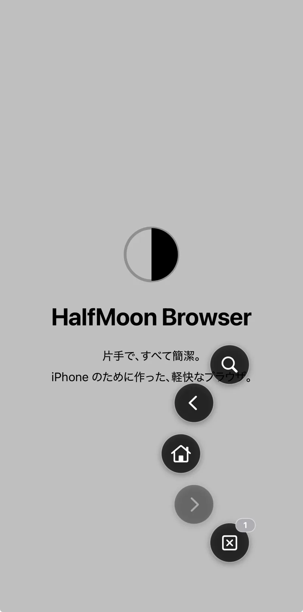
01 — Dial
画面の端に指を置くと、
半月が開く。Touch the edge,
and the half-moon opens.
指を画面の端に置くとダイヤルが現れ、上下にスライドして指を離すだけで実行。戻る・進む・タブ操作・検索・広告ブロック・ダークモード切替 ― よく使う操作が、親指の届く場所に。 Rest a finger on the screen edge and the dial appears — slide and release to act. Back, forward, tabs, search, ad-block, dark mode: your everyday actions, all under your thumb.
- 左右どちらの端からでも呼び出せるSummon from either edge, left or right
- サブメニューでさらに機能を拡張Submenus extend the dial even further
- 感度・操作モードも調整可能Adjustable sensitivity and input modes
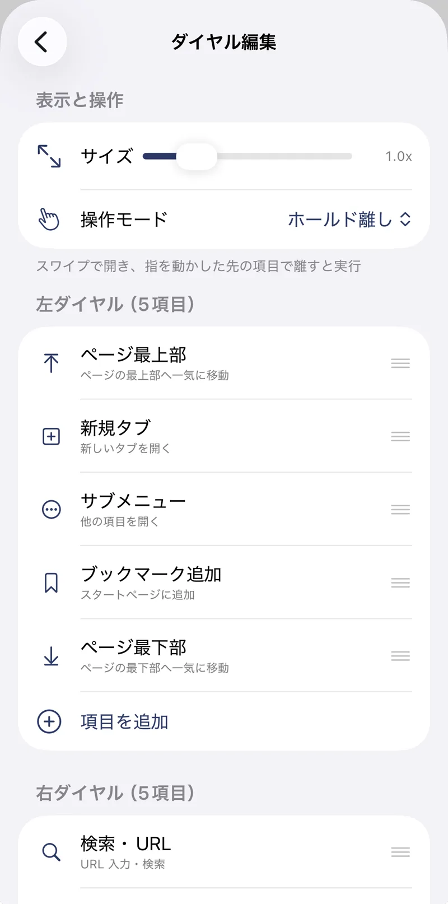
02 — Customize
ダイヤルは、
あなた仕様に作り込める。A dial built
to your exact taste.
ダイヤルに置く項目も、並び順も、自由自在。通常版は左・右・サブメニューに各6項目、Pro版なら各12項目まで拡張できます。置くのは、あなたがよく使う操作だけで十分。 Choose what goes on the dial and in what order. Six slots per direction on the free version — twelve with Pro. Keep only the actions you actually use.
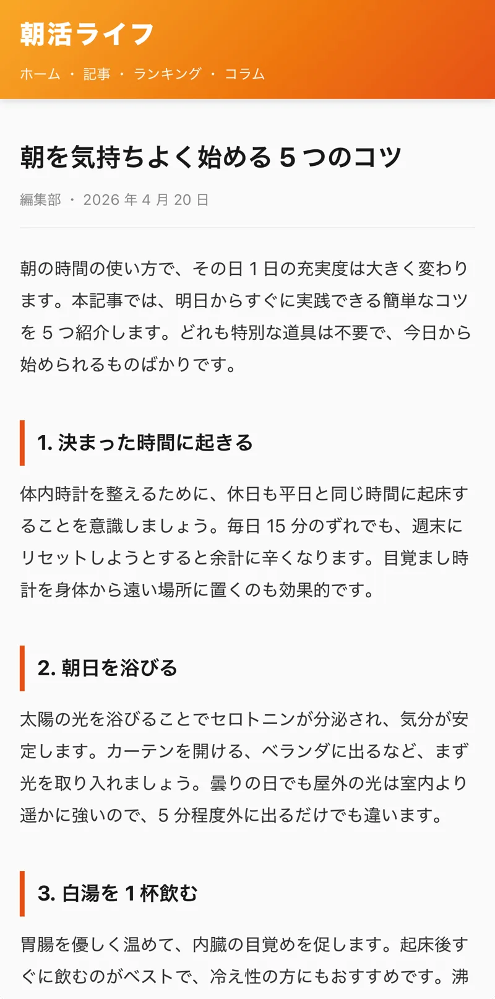
03 — Ad Block
かつてない強力な、
3層広告ブロック。A three-layer ad blocker
like no other.
日本で広く使われる広告配信ネットワークを200以上カバーするURLフィルタ、ネイティブ広告に効くCSS非表示、そしてアンチアドブロック検知の回避。3つの層が連携して、ページを静かにします。 A URL filter covering 200+ ad networks, CSS hiding that catches native ads, and anti-adblock evasion — three layers working together to quiet the page.
- 残った広告は指でタップして消去、サイト単位で記憶Tap leftover ads to hide them — remembered per site
- 完全オフライン動作。ブロックのログも送信しないFully offline. No blocking logs ever leave the device
- 支えたいサイトではサイト別にオフも可能Turn it off per-site for creators you want to support
Before / After
同じページが、ここまで変わる。 The same page, transformed.
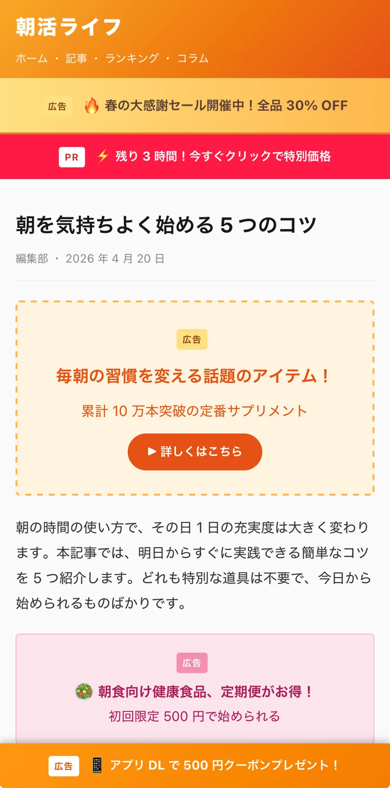
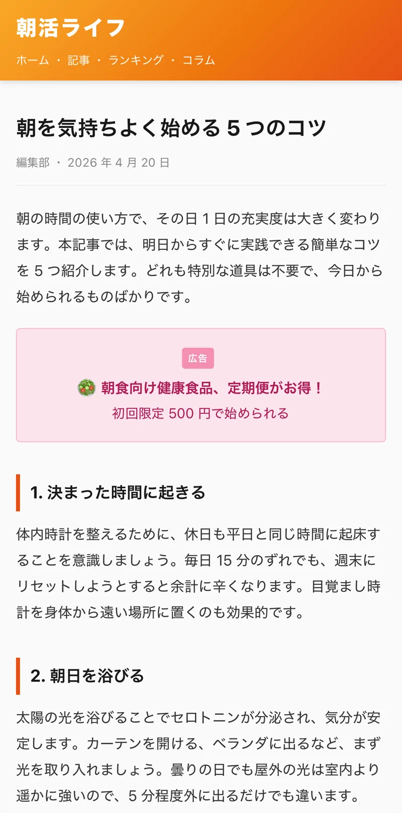
More
夜も、秘密も、ぬかりなく。 Night mode and private mode, done right.
Dark
強制ダークモード / スーパーダークForced dark mode / Super Dark
対応していないサイトも強制的に暗転。画像は自動で再反転するので、写真はそのままの色で。夜の目の負担を減らします。Darkens even sites with no dark theme. Images are auto re-inverted so photos keep their true colors. Easier on your eyes at night.
Private
プライベートブラウザPrivate browsing
Face ID / Touch ID / パスコードで保護。履歴もCookieも端末に残さず、セッション終了時に自動削除します。Protected by Face ID / Touch ID / passcode. History and cookies vanish automatically when the session ends.
Data
データ管理も端末の中でYour data stays on device
パスワード自動入力(Keychain暗号化)、サイト別のCookie/キャッシュ削除、ダウンロード管理。すべて端末内で完結します。Password autofill (Keychain-encrypted), per-site cookie and cache control, downloads — all handled entirely on your device.
Zero
サーバー送信、ゼロ。Zero server uploads.
当方のサーバーには一切のユーザー情報を送信しません。分析ツールもクラッシュレポートSDKも広告SDKも不使用。詳しくはプライバシーポリシーへ →Nothing is ever sent to our servers. No analytics, no crash SDKs, no ad SDKs. Read the privacy policy →
Gallery
スクリーンショットScreenshots
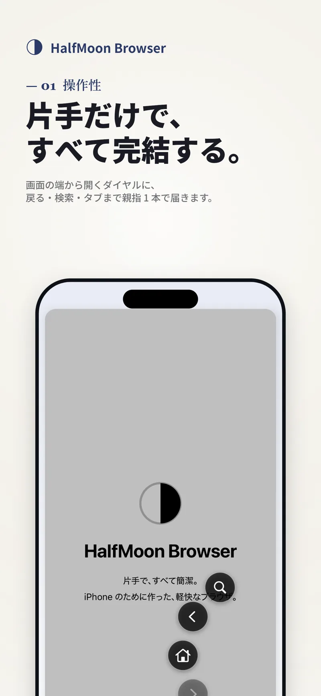
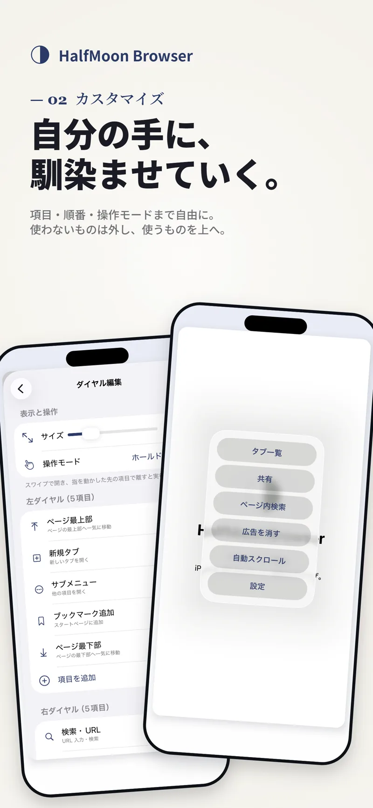
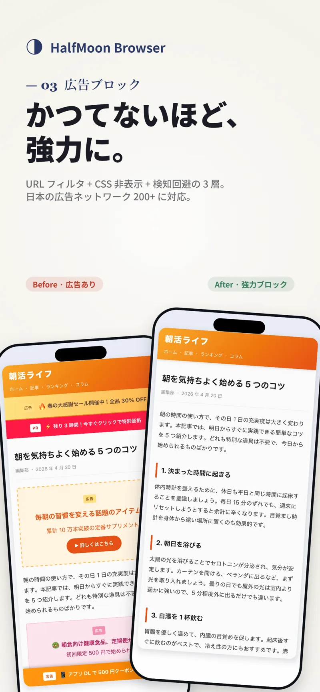
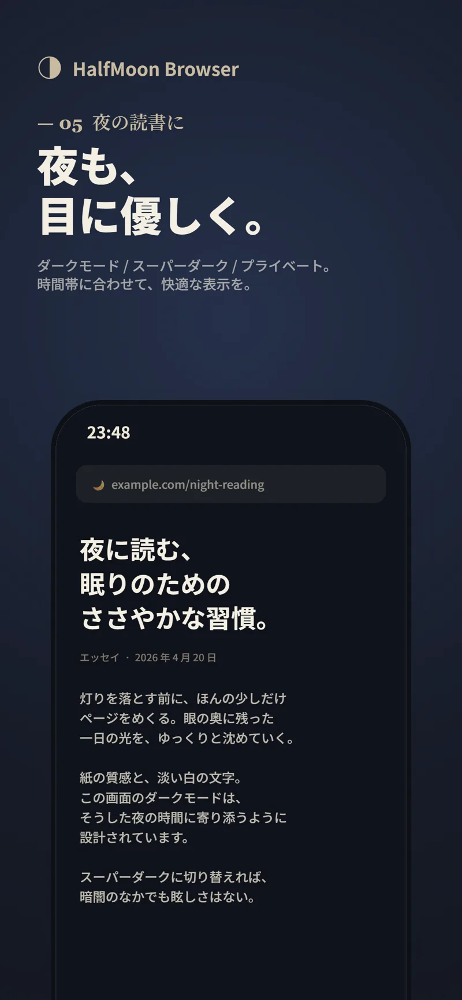
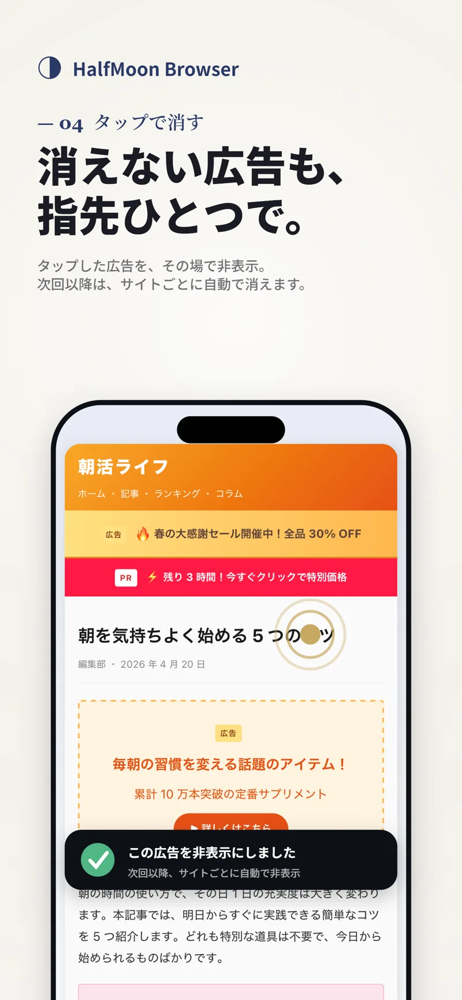
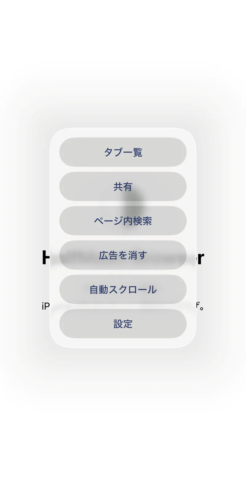
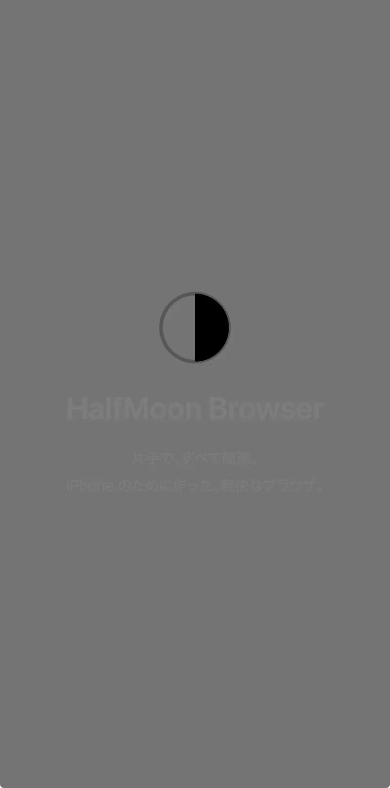
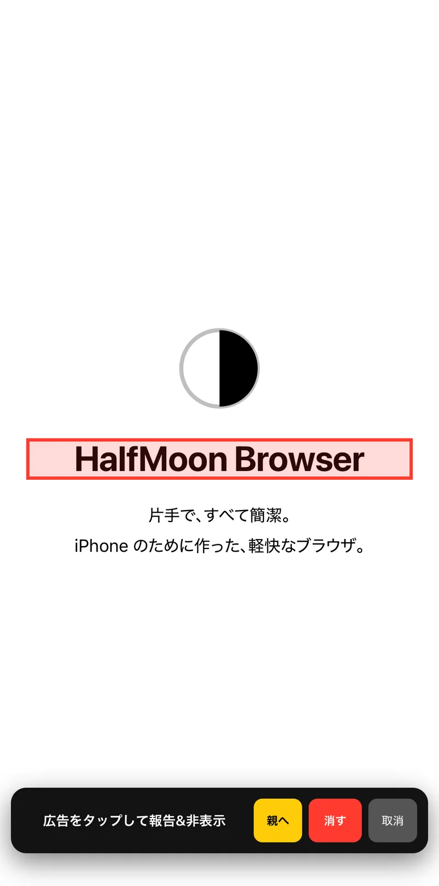
Specs
製品情報Product Info
| タイトルTitle | HalfMoon Browser |
|---|---|
| カテゴリCategory | WebブラウザWeb browser |
| 対応環境Requirements | iOS / iPadOS 16.0+ |
| 価格Price | 無料(Pro版はアプリ内課金・買い切り)Free (Pro unlocked via one-time in-app purchase) |
| バージョンVersion | v1.2.2 |
| 開発Developer | R-each |
| App Store | apps.apple.com/jp/app/halfmoon-browser |
今日から、親指1本で。 From today, one thumb is all you need.
HalfMoon BrowserはApp Storeで無料配信中です。 HalfMoon Browser is free on the App Store.